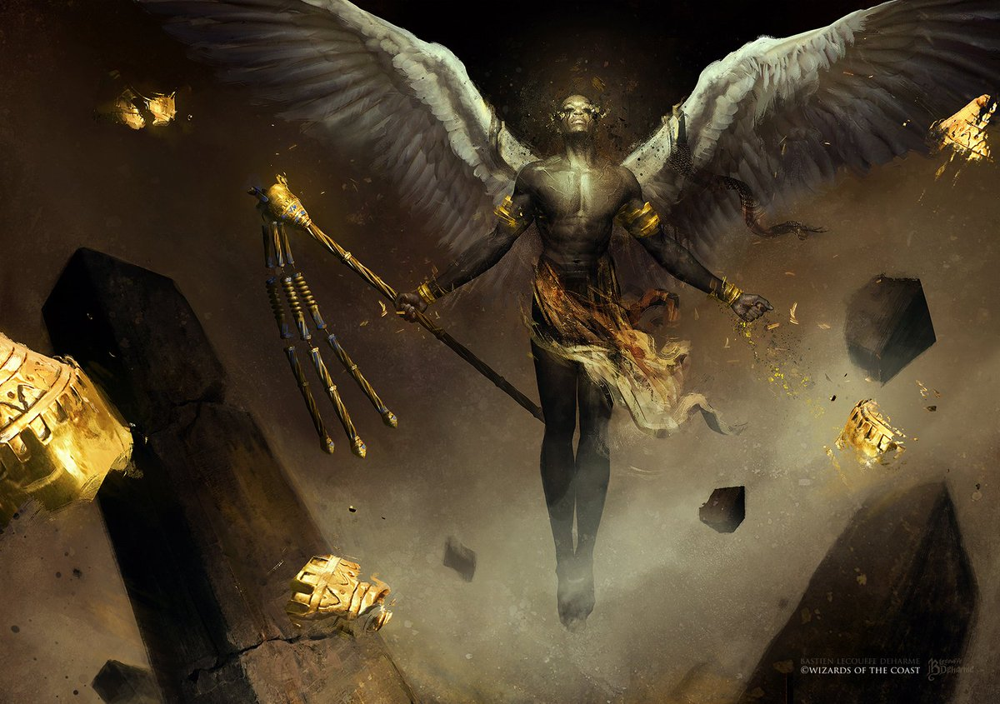

Attributes:
- Heath 560, Mana 375
- Strength scale 5/10
- Agility speed 9/10
- Intelligence 10/10
Angels

Angels are creatures of the light. Elegant, wise and beautiful. They are extremely protective over loved ones
and brutal when provoked. They are powerful which gives you the chance to defeat the Dark Witch.
When the beautiful angel princess cried for help, it was the Angels that heard first, with their powerful
hearing, they can hear frequencies that no human could possibly bare.
They are gentle and compassionate, however when provoked, they turn into something else!
They lose their senses and will become destructive! With their huge wings strong enough to create hurricanes!
This is your chance to save the angel princess! Become an angel now!
"Let's avenge her" They said!
Attributes:
It's swiftness and speed means that the Angels are light, they are not very durable, low armor. Natural enemies includes:
To become one of them is the sacrifice you have to make, to be powerful enough to defeat the Witch and its dominions, and ultimately save the wondrous angel princess!